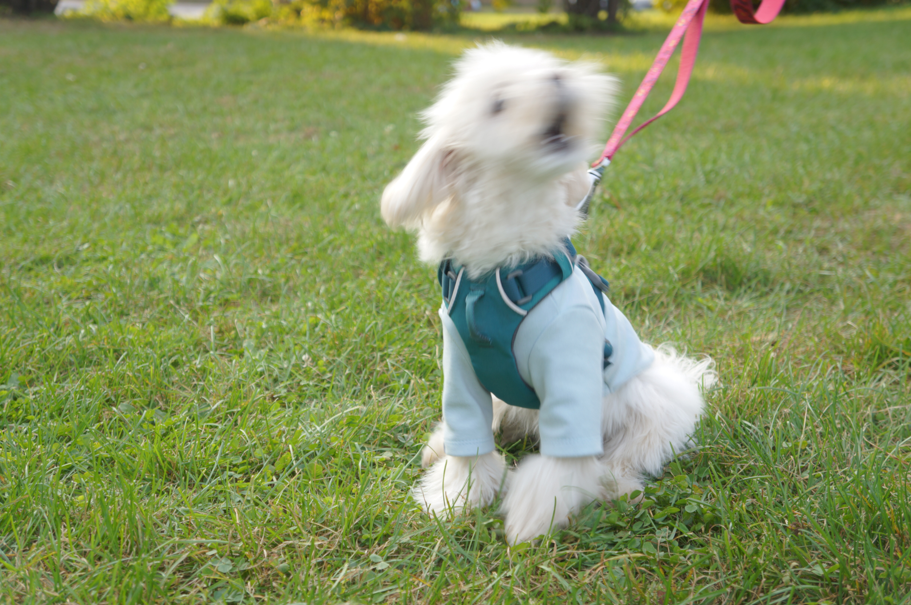

About Me
My name is Yixin Li, I was born in China on 5th February 1999. After graduating from this program, I want to be a UX Designer, and my final goal is to become a freelancer in this field. However, I always dream about having a pottery studio near the sea and watching the sunset while making pottery.
I am a person who is very passionate about things that I am not familiar with or things I do not know. I love criminal novels and podcasts about true crime, I wanted to be a forensic when I was a little kid, but medicine is just too difficult for me to learn. I can also spend my whole day alone playing with Lego, baking etc.
Love yourself before you love others. -Yixin Li